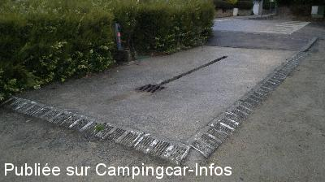
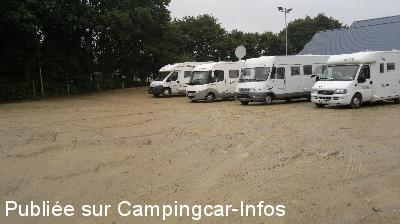
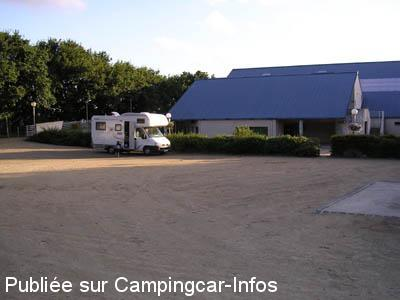

ASN = Aire de services avec stationnement nuit possible de :
GUIMILIAU
(N° 757)
Accès/adresse :
Rue des Bruyères
29400 GUIMILIAU
29400 GUIMILIAU
Latitude : (Nord) 48.4865° Décimaux ou 48° 29′ 11′′
Longitude : (Ouest) -3.997° Décimaux ou -3° 59′ 49′′
Tarif : Gratuit
Type de borne : Autre
Services :


Autres informations :
Ouverte toute l'année.
Aire avec 10 emplacements,
Tél Mairie : +33(0)298 687 506

Le 13/09/2013 par cricrik57

Le 12/09/2013 par cricrik57

Le 06/09/2004 par Thomas PARAYRE
de
Xtian74
le 21/07/2014 :
Passage le 15/07/2014. Aire sablonneuse, légèrement en pente. Stationnement et services gratuits.
Nous y avons passé une nuit solitaire et bien calme.
La petite église de Guimiliau et son enclos paroissial méritent le détour ...
Passage le 15/07/2014. Aire sablonneuse, légèrement en pente. Stationnement et services gratuits.
Nous y avons passé une nuit solitaire et bien calme.
La petite église de Guimiliau et son enclos paroissial méritent le détour ...
de
cricrik57
le 12/09/2013 :
Aire pour CC à coté de la salle polyvalente, calme et ombragée, vidange et eau gratuites.
Aire de vidange bien pensée avec caniveau centrale dans le sens du véhicule, ce qui permet, avec nos campings cars équipés de 2 réservoirs, de faire la vidange en une fois, sans bouger le véhicule
Bravo à la commune et merci pour les services gratuits.
Aire pour CC à coté de la salle polyvalente, calme et ombragée, vidange et eau gratuites.
Aire de vidange bien pensée avec caniveau centrale dans le sens du véhicule, ce qui permet, avec nos campings cars équipés de 2 réservoirs, de faire la vidange en une fois, sans bouger le véhicule
Bravo à la commune et merci pour les services gratuits.
de
Joint 56
le 29/07/2009 :
Très grand parking, calme surtout pour un seul camping-car (le mien). Aire de services en mauvais état mais a le mérite de fonctionner.
Très grand parking, calme surtout pour un seul camping-car (le mien). Aire de services en mauvais état mais a le mérite de fonctionner.
de
QUITTET
le 03/09/2007 :
Aire bien équipée, très calme, très beau village et un enclos paroissial magnifique.
Aire bien équipée, très calme, très beau village et un enclos paroissial magnifique.
de
Thomas PARAYRE
le 06/09/2004 :
Aire tres sympa, contre la salle polyvalante. Vaste parking (30 places et non 10!) en graviers et à plat.
Vidange et plein d'eau aisé. WC publics contre la salle polyvalante (coté gauche à partir du parking).
Je conseille vivement cette aire pour passer une nuit au calme, apres avoir visiter les magnifiques enclos parroissiaux.
Aire tres sympa, contre la salle polyvalante. Vaste parking (30 places et non 10!) en graviers et à plat.
Vidange et plein d'eau aisé. WC publics contre la salle polyvalante (coté gauche à partir du parking).
Je conseille vivement cette aire pour passer une nuit au calme, apres avoir visiter les magnifiques enclos parroissiaux.